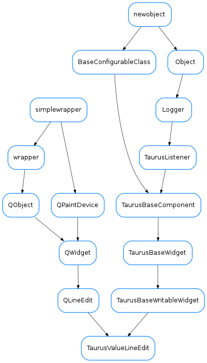

TaurusValueLineEdit¶

-
class
TaurusValueLineEdit(qt_parent=None, designMode=False)[source]¶ Bases:
PyQt4.QtGui.QLineEdit,taurus.qt.qtgui.base.taurusbase.TaurusBaseWritableWidgetA taurus-aware
QLineEdit. It will display the value (or fragment of the value) referenced by its model. It is aTaurusBaseWritableWidgetand as such it does not apply the changes straight away to the model (unlessautoApplyis enabled), but instead shows that there are pending operations which can be applied by pressing “ENTER”.When used with numerical value Attributes as its model, it provides some extended behaviour:
- It represents out-of-limit values using different colours (for warning, range, invalid,...)
- It uses a validator that is range-aware
- The mouse wheel and keyboard arrows can be enabled for doing value increments
Note
when used with models whose value is a pint Quantity, the text is parsed by pint and therefore one can write e.g. 2 3 mm which is equivalent to 6 mm !
-
enableWheelEvent¶
-
isTextValid()[source]¶ Validates current text
Return type: boolReturns: Returns False if there is a validator and the current text is not Acceptable. Returns True otherwise.